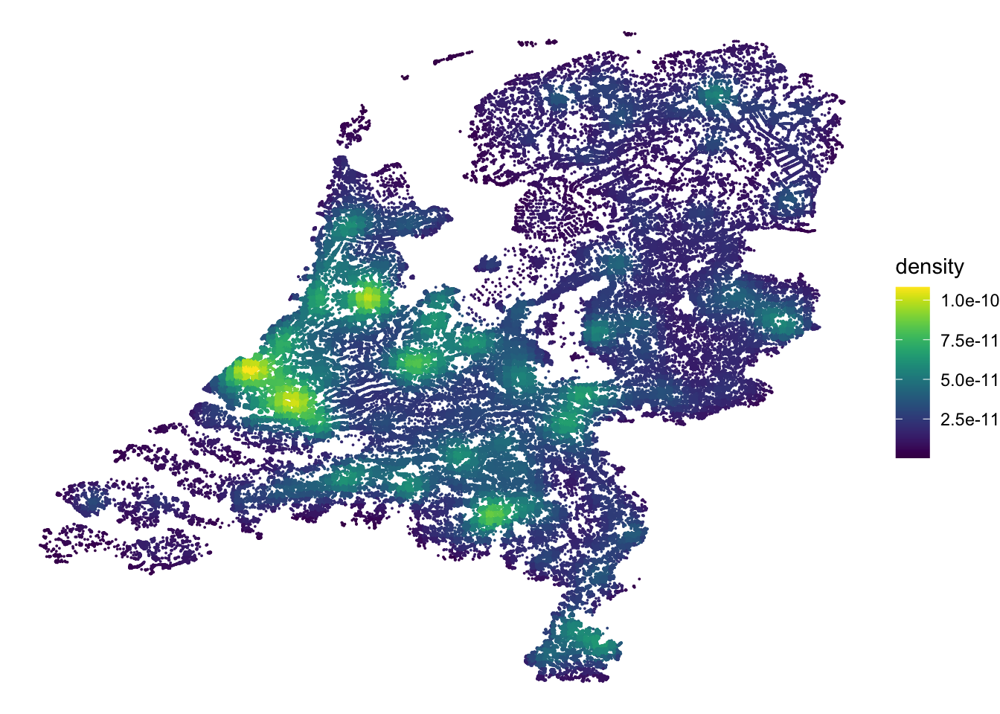
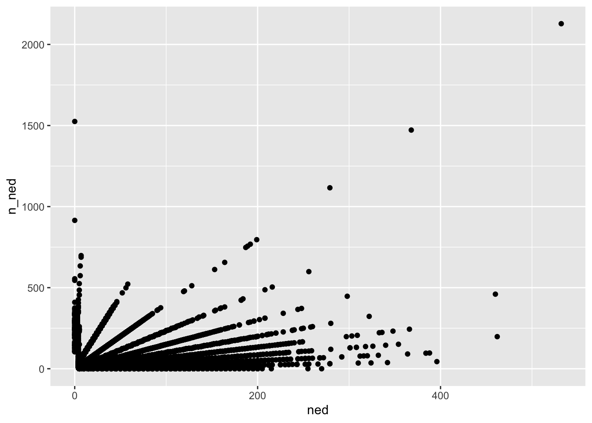
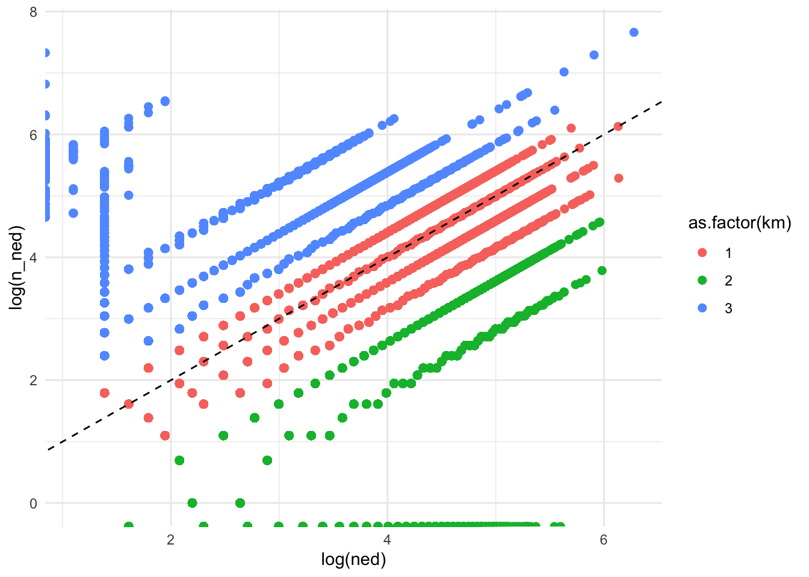
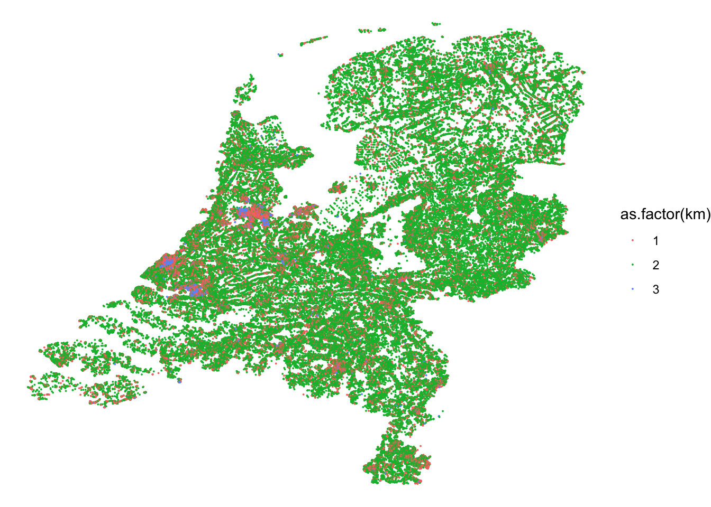
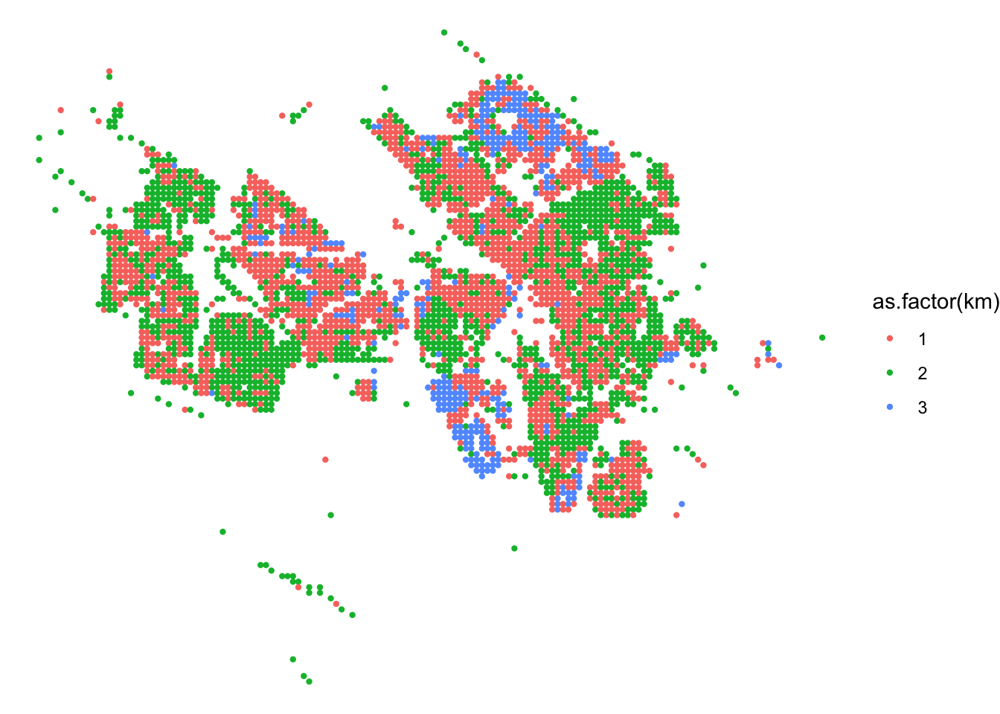
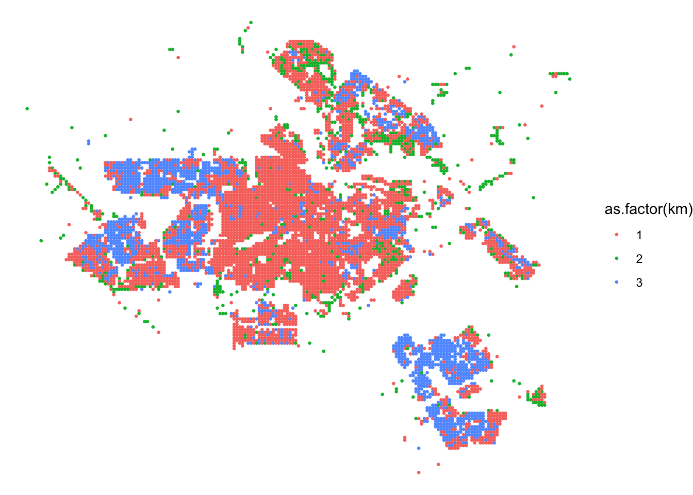
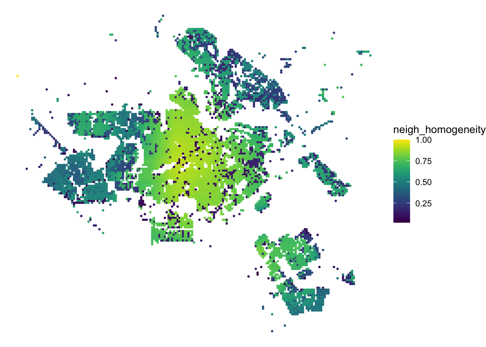
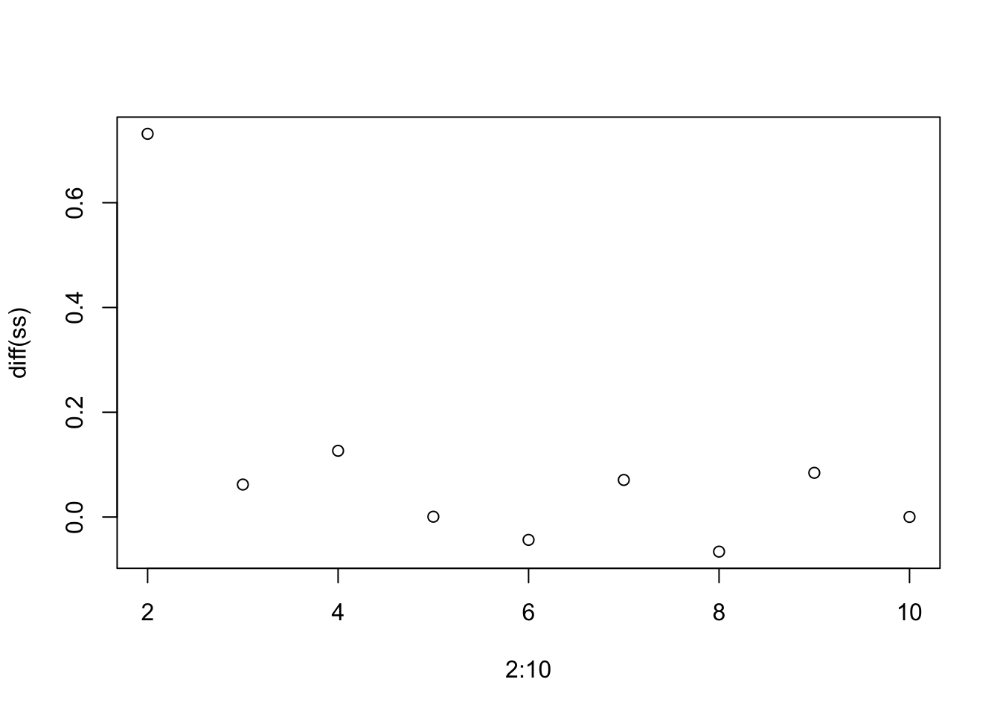

kmeans exploration
Explore segregation via k-means
Load the dataset. I have made a slim version of the dataset which contains the variable of interest as suggested by Jochem.
dir <- "/Users/evaviviani/Library/CloudStorage/OneDrive-NetherlandseScienceCenter/polpol_tolsma/"
load(paste0(dir, '20230424raster.rda'))
# make english-friendly
x$town_name <- stringr::str_replace_all(string = x$GM_NAAM,
pattern = " ", repl = "")
x$town_name <- gsub(",", "_", x$town_name)
polpol <- cbind(x[, c(1, 114, 43:44)], st_coordinates(x[, 43:44]))
colnames(polpol)[1]<- 'grid_cell'
rm(x); gc() used (Mb) gc trigger (Mb) limit (Mb) max used (Mb)
Ncells 2481696 132.6 7620797 407.0 NA 4075770 217.7
Vcells 7855522 60.0 46667956 356.1 102400 53517319 408.4Sneak peek of the dataset. grid_cell and town_name self explanatory. ned = proportion of dutch present in the grid, n_ned proportion of non-dutch present in the grid. X and Y coordinates of the grid.
head(polpol)Simple feature collection with 6 features and 6 fields
Geometry type: POINT
Dimension: XY
Bounding box: xmin: 19550 ymin: 395050 xmax: 19650 ymax: 395450
Projected CRS: Amersfoort / RD New
grid_cell town_name ned n_ned X Y geom
1 E0196N3954 Veere 40 5 19650 395450 POINT (19650 395450)
2 E0196N3953 Veere 45 0 19650 395350 POINT (19650 395350)
3 E0196N3952 Veere 54 6 19650 395250 POINT (19650 395250)
4 E0195N3951 Veere 8 2 19550 395150 POINT (19550 395150)
5 E0196N3951 Veere 40 0 19650 395150 POINT (19650 395150)
6 E0195N3950 Veere 4 6 19550 395050 POINT (19550 395050)Map of the coordinates
Get density of points in 2D
get_density <- function(x, y, ...) {
dens <- MASS::kde2d(x, y, ...)
ix <- findInterval(x, dens$x)
iy <- findInterval(y, dens$y)
ii <- cbind(ix, iy)
return(dens$z[ii])
}polpol$density <- get_density(polpol$X, polpol$Y, n = 100)Plot points
ggplot(data = polpol) +
geom_point(aes(x = X, y = Y, colour = density), size = 0.01) +
viridis::scale_color_viridis() +
theme_void() 
ned and n_ned are essentially a single feature variable (i.e., dutchness). They are correlated as of course if the number of dutch increases, it will increase also the number of non-dutch, as it means that area they are living is bigger/densely populated. Let’s check:
ggplot(polpol, aes(x = ned, y = n_ned)) +
geom_point()
The scales seem also a bit different. OK, let’s collapse the information within ned and n_ned in a single variable, let’s call it delta. This will be the proportion of dutch inhabitants over the total. Scores close to 1 will indicate prevalence of dutch, close to 0 to non-dutch.
polpol$delta <- (polpol$ned - polpol$n_ned) / (polpol$ned + polpol$n_ned)
polpol$sum <- (polpol$ned + polpol$n_ned)Let’s apply K-means now. I hypothesise 3 clusters as being informative: dutch, non-dutch, and equal number of dutch/non-dutch.
set.seed(1)
polpol_kmeans <- kmeans(polpol$delta, centers = 3, iter.max = 15)polpol_kmeans object contains the cluster assignments, cluster centers, and other information about the result of the k-means algorithm. You can access these by typing polpol_kmeans$cluster and polpol_kmeans$centers
polpol_kmeans$centers [,1]
1 0.1176918
2 0.8499252
3 -0.5381118head(polpol_kmeans$cluster)[1] 2 2 2 2 2 1Let’s add the cluster labels to the dataset:
polpol$km <- polpol_kmeans$clusterPlot the cluster labels obtained on delta over the ned/n_ned points
ggplot(polpol, aes(x = log(ned), y = log(n_ned), colour = as.factor(km))) +
geom_point(size = 2) +
geom_abline(slope = 1, intercept = 0, linetype = "dashed") +
theme_minimal()
Now let’s plot the clustered labels on the X, Y coordinates:
ggplot(data = polpol) +
geom_point(aes(x = X, y = Y, colour = as.factor(km)), size = 0.01) +
theme_void() 
So, 1 (pink) tells me that there is prevalence of dutch over non-dutch. 3 (blue) tells me the opposite, while 2 (green) tells me that there is an equivalent number of people dutch/non-dutch. Let’s zoom in into a city to have a better visualisation:
ggplot(data = polpol |> filter(town_name == "Utrecht")) +
geom_point(aes(x = X, y = Y, colour = as.factor(km)), size = 0.8) +
theme_void() 
neigh_homogeneity <- function(df, x_col, y_col, kmean_col, radius = 2000) {
nh <- numeric(0)
df$geom <- NULL # remove geom because otherwise it interferes with the X-Y selection column
for (i in 1:nrow(df)) {
# Select the rows in the data frame that are within the specified radius
nx <- abs(df[, x_col] - df[i, x_col]) <= radius
ny <- abs(df[, y_col] - df[i, y_col]) <= radius
# Subset the data frame to include only the rows within the specified radius
n <- df[nx & ny, kmean_col]
# Calculate the neighborhood homogeneity as the proportion of cluster labels
# that match the label of the current point
homogeneity <- sum(n == df[i, kmean_col]) / length(n)
# append it to nh
nh <- c(nh, homogeneity)
}
return(nh)
}neigh_homogeneity <- neigh_homogeneity(df = polpol |> filter(town_name == "Amsterdam"), x_col = "X", y_col = "Y", kmean_col = "km", radius = 2000)amsterdam <- polpol |> filter(town_name == "Amsterdam")
amsterdam$neigh_homogeneity <- neigh_homogeneityp1 <- ggplot(data = amsterdam) +
geom_point(aes(x = X, y = Y, colour = as.factor(km)), size = 0.5) +
theme_void()
p1
p2 <- ggplot(data = amsterdam) +
geom_point(aes(x = X, y = Y, colour = neigh_homogeneity), size = 0.5) +
viridis::scale_color_viridis() +
theme_void()
p2
To understand how many clusters we can have, we can also plot the difference in variance and see for which number of cluster this decreases.
set.seed(1)
ss <- NULL
for (i in 1:10) {
km <- kmeans(x = polpol$delta, centers = i)
ss[i] <- km$betweenss / km$totss
}
plot(x = 2:10, y = diff(ss))
So, at k = 3 this decreases dramatically and then oscillates.